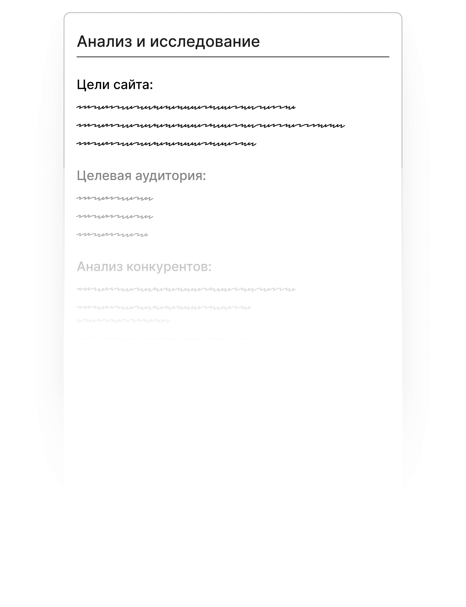
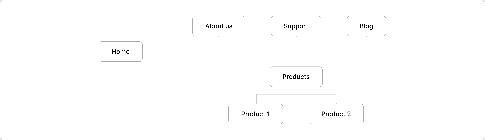
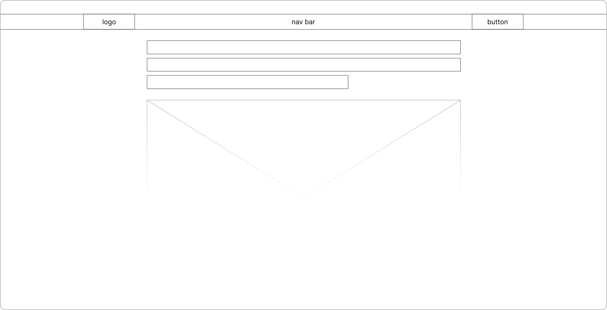
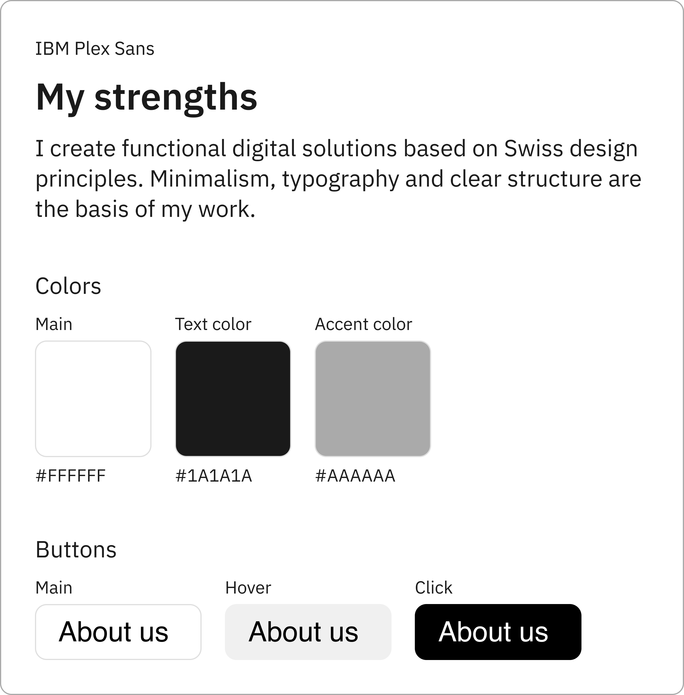
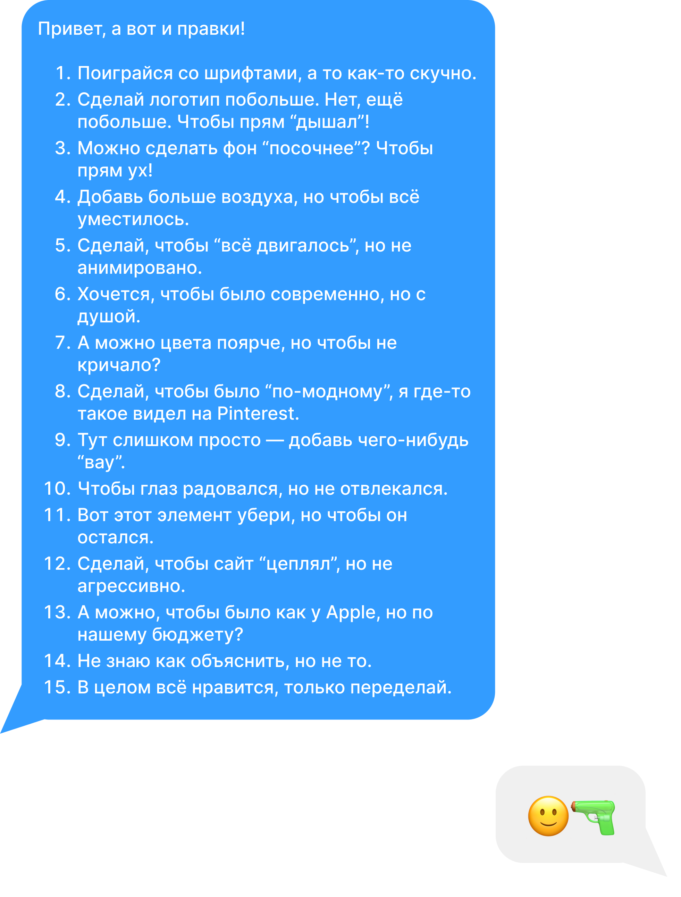
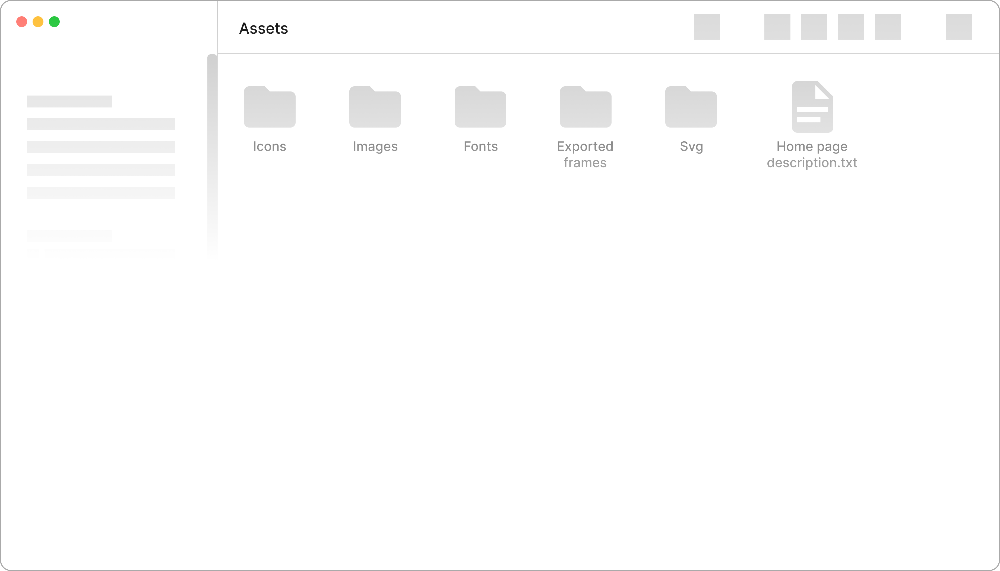
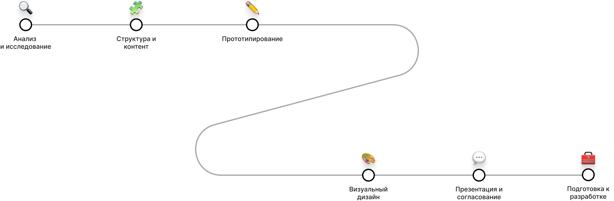

🤔
The website goals and business objectives are defined. The target audience and their needs are studied. Competitor analysis is conducted to examine their solutions. References are collected and a visual direction is created. The result — understanding what is being created and for whom.

A site map is created — a scheme of all pages and their connections. Navigation logic is determined: how the user will move from section to section. The structure of each page is built — which blocks go in what order. Content is prepared: texts, photos, icons, videos, and graphics. It's important to consider the hierarchy of information — from main to secondary. The result — a clear plan on which the prototype is based.

Wireframes are created — black-and-white page layouts without design. The goal — to show structure, block order, and interaction scenarios. The prototype helps the client and designer align the logic before working on the visual. At this stage, UX solutions are tested — whether it is convenient for the user to achieve the goal. The result — a clear, functional UX prototype.

A UI concept is created — selection of colors, fonts, illustrations, and overall style. A design system is developed: buttons, forms, cards, grids, spacing. The designer creates key screens (e.g., main, catalog, product page). After approval, all remaining pages and responsive layouts are designed. Everything is combined into a cohesive visual brand ecosystem. The result — final design mockup, ready for developers.

An interactive prototype is created in Figma, XD, or Framer for demonstration. The designer explains the idea, highlights, and user scenarios. The client provides feedback: what they like, what needs refinement. Changes are made according to comments without losing logic and style. Sometimes usability testing with real users is conducted. The result — an approved, refined design.

Assets are exported — icons, images, graphics in the required formats. A guideline or UI kit is created — instructions for developers. Figma specifies spacing, sizes, and element states. The designer collaborates with developers, clarifies details. Visual compliance is checked during coding. The result — the design is fully ready for implementation.


Web design is not just about “looking good,” it’s about meaning and interaction.
It’s a process where every detail works toward the goal — making the product convenient, clear, and emotionally precise.
Good design is the language of communication between brand and user:
it builds trust, guides, and helps users act.
It combines analytics, aesthetics, and psychology, turning the interface into a living communication tool.
The designer doesn’t just draw — they create an experience that inspires and makes interaction natural.
✅
That was a lot of text!